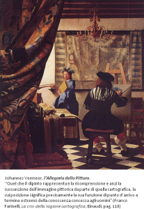
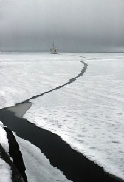
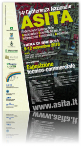
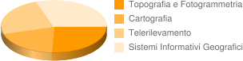
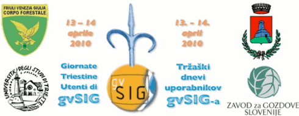

Archivio per la categoria ‘Eventi’
13 settembre, 2010 | di Sergio Farruggia
Agosto è trascorso e, com’è consuetudine, senza attendere il ritorno degli amanti delle vacanze settembrine, anche il Consiglio Scientifico ASITA ritorna ai propri compiti. Gli autori hanno ormai inviato gli articoli e così potranno essere definiti i programmi delle singole sessioni (orali e poster) della Conferenza.
Il nostro primo post sembra essere stato apprezzato. GEOMEDIA ne ha tratto un comunicato per il suo sito (grazie). Sono pervenuti due commenti di cui diamo conto nel seguito. Chi il ghiaccio (quello vero) non lo vuole rompere, anzi si adopera per conservarlo è… ma continuate a leggere.
Massimo Zotti e Giovanni Biallo hanno apprezzato l’iniziativa e hanno espresso la speranza che si prosegua, anche dopo la conferenza. Certamente il database gestito dal Consiglio Scientifico ASITA consentirà di fornire altri dati, su vari aspetti della produzione scientifica nazionale riguardante il nostro settore. A evento concluso, prevediamo di divulgare informazioni sui visitatori della Conferenza e forse questo interesserà ancora di più le aziende espositrici. Possiamo immaginare una distribuzione per settore di appartenenza, piuttosto che una per aree d’interesse o, ancora, rispetto alla posizione in azienda o nell’ente di appartenenza. Siccome siamo un po’ fanatici potremo presentare pure una distribuzione per provenienza geografica! Ciò sarà fattibile con il contributo della segreteria, che ci supporta con la sua presenza tanto discreta, quanto efficace. Ora che “il ghiaccio è stato rotto” speriamo di ricevere altri contributi e suggerimenti dal mondo delle imprese, così come dai visitatori (del passato e, ci auguriamo, dell’edizione 2010).
Dobbiamo invece deludere Massimo (e anche Giovanni e forse molti altri): anche quest’anno per prendere parte ai lavori della Conferenza (non per visitare l’esposizione) sarà necessario pagare l’iscrizione. Il Consiglio Scientifico non ha competenze sugli aspetti economici dell’evento, però può certamente esprimere suggerimenti e, soprattutto, come sta tentando di fare attraverso questo blog, anche aiutare le diverse componenti della nostra comunità a indirizzare le istanze entro i canali di comunicazione e gestionali della vita associativa. E’ un invito appassionato perché, non solo prendendo spunto dalle pagine di TANTO, le questioni, le proposte e le critiche sulla Conferenza siano discusse e approfondite all’interno delle nostre associazioni e trovino poi possibilità di sintesi proprio presso la Federazione. Come Consiglio vorremmo allora provocare qualche ulteriore commento su questo argomento. Siamo sicuri che soltanto eliminando la quota d’iscrizione aumenterebbe la partecipazione alla conferenza? Chi ha interesse a seguire alcune sessioni concentrate in una giornata, e vuole visitare nello stesso giorno l’esposizione, deve sostenere un costo di 100 euro, importo che un lavoratore pubblico o privato non dovrebbe avere difficoltà a farsi rimborsare dal proprio superiore. Caso mai è il costo del viaggio, l’assenza per una (o più) giornate dal posto di lavoro che saranno messe sul piatto della bilancia dal libero professionista, come dal dipendente (e dal suo manager!). Chissà un’edizione futura della Conferenza non avrà più barriere all’ingresso… ma dovremo immaginare anche qualcosa “per l’altro piatto”. Ad esempio – allacciandoci all’opinione di Biallo circa i motivi della mancata presentazione di contributi sui Location-Based Services , sulla Location Intelligence, ecc.- non dover più (solo) migrare in altri contesti per sentire parlare di questi e tanti altri temi.
Ritorniamo su alcuni temi del programma. Giuseppe Borruso, più di altri del Consiglio, ha seguito una tra le “novità” dell’edizione 2010 della Conferenza ASITA: la presenza non indifferente di contributi legati alla cartografia storica. <<Ricordando alcune cifre, della sessantina di contributi etichettati esplicitamente come legati alla “cartografia” -sottolinea Giuseppe- un terzo (20) fanno riferimento alla cartografia storica, in buona parte facenti capo a geografi provenienti dalle università italiane, da anni riuniti in ricerche su questi temi e sull’integrazione delle fonti informative storiche con gli strumenti di informazione geografica (segnatamente GIS e telerilevamento). Ciò ha spinto il CS a decidere di dedicare a tali temi una sessione orale, nonché uno spazio poster particolarmente nutrito. È forse superfluo ricordare che le fonti cartografiche storiche, o comunque pre-era digitale, riassumevano in un unico strumento – la carta – dati, informazioni e conoscenza del territorio, coniugando segni grafici, testi e rappresentazioni pittoriche, di fatto, costituendo veri e propri strumenti d’informazione geografica. Tale “novità” (volutamente virgolettata!) e presenza segnano quindi un importante punto di contatto di visioni del territorio inevitabilmente sempre più interrelate e capaci di accrescersi vicendevolmente>>.
Ritorniamo al ghiaccio, quello vero. Maria Antonietta Dessena anticipa un’altra interessante iniziativa inserita in questa edizione della Conferenza. <<Il richiamo al “ghiaccio” di Sergio trova quest’anno un’interessante collocazione nel workshop dedicato alle terre estreme ed ai ghiacciai di grande attrattiva e suggestione, nonché importanti risorse naturali e indicatori ambientali delle variazioni climatiche. Anche quest’anno il gruppo geologi del CS e l’Associazione Italiana Telerilevamento intendono sensibilizzare il pubblico su temi d’attualità e su interessanti ricerche, passando tra le diverse discipline della geomatica (cartografia, telerilevamento ecc.). Nel passato le sessioni speciali si erano concentrate sul dissesto idrologico e per due anni consecutivi sulle problematiche delle coste, tema sentito su buona parte della nostra penisola. Gli interventi, che si susseguiranno con chairman il Presidente di AIT Ruggero Casacchia, verteranno su esperienze concrete e risultati di ricerche in corso dalle Alpi al K2, fino alle Svalbard nel Mar Glaciale Artico. Il “ghiaccio” è ora quasi rotto e visto il successo delle precedenti edizioni venite al workshop numerosi>>.
Il Consiglio Scientifico di ASITA
Posted in Eventi | No Comments »
6 settembre, 2010 | di Andrea Borruso
Oggi inizia il FOSS4G 2010, e purtroppo io non ci sarò 
Scrivo questo post per fare un “in bocca al lupo” a tutti i partecipanti: a quelli che rendono vivo questo mondo, a quelli che non finiscono mai di regalarci nuovi strumenti e/o di migliorare quelli esistenti, a quelli che producono dei fantastici materiali didattici, a quelli che combattono per la valorizzazione ed una maggiore distribuzione dei dati liberi, a quelli che rispondono ad un messaggio di una mailing list alle 3 di notte, a quelli che ci mettono entusiasmo, tempo e professionalità, a quelli che impareranno qualcosa di nuovo ed avranno una nuova luce negli occhi. A tutti loro grazie!
A chi (come me) non ci sarà non resta che farsi rodere dall’invidia  , leggere il programma della conferenza, scorrere l’elenco delle presentazioni, dei poster, dei workshop e dei tutorial, e soprattutto “giocare” con il fantastico live DVD preparato per l’occasione (io vado a scaricarlo).
, leggere il programma della conferenza, scorrere l’elenco delle presentazioni, dei poster, dei workshop e dei tutorial, e soprattutto “giocare” con il fantastico live DVD preparato per l’occasione (io vado a scaricarlo).
Oppure molto più semplicemente seguire l’onda e scoprire cosa dice e fa la gente intorno a #foss4g2010.
Posted in Eventi | 4 Comments »
9 agosto, 2010 | di Sergio Farruggia
Mancano poco meno di 100 giorni all’inaugurazione della XIV edizione della Conferenza ASITA. Il Consiglio Scientifico della Federazione con questo post vorrebbe aprire un filo diretto con il mondo della Rete, partendo da TANTO e –magari attraverso gli imperscrutabili e imprevedibili legami che si creano nel www- arrivare sulle tante homepage, blog, riviste digitali che compongono la ragnatela della comunità geomatica italiana.
Vorremmo raccontare anche un po’ cosa avviene “dietro le quinte”, un po’ del lavoro svolto dal Consiglio Scientifico (CS) della Federazione, coinvolto, ormai da quasi tre lustri a partire da ogni mese di aprile, secondo un calendario cadenzato dalle classiche deadline e incombenze organizzative. Forse potrà interessare la comunità mettere in risalto qualche dato, qualche notizia, giusto per prendere confidenza con il mondo di ASITA. Approfittando del mio ruolo di presidente pro-tempore di questo organismo e coadiuvato dai miei colleghi, partiremo proprio dalle pagine di TANTO.
Questa è la prima edizione della conferenza curata da un consiglio potenziato e in parte rinnovato nei suoi componenti. Ne abbiamo dato notizia qui. Quello è un primo comunicato in cui abbiamo riportato le motivazioni che hanno indotto le quattro associazioni che costituiscono la Federazione a questa scelta e in cui è espresso un proposito. Questo post è un primo effetto di tale intendimento.
Il programma preliminare della conferenza è stato pubblicato sul sito ASITA e diffuso pochi giorni fa: lo trovate qui.
Riportiamo alcuni dati riguardanti le proposte di contributi tecnico-scientifici pervenuti al CS. In totale sono stati inviati circa 370 abstract. Suddivisi per discipline o macro-temi, circa 85 riguardano argomenti relativi alla topografia e alla fotogrammetria; 65 trattano di temi prettamente cartografici, mentre circa 80 sono relativi al telerilevamento; infine, circa 140 espongono argomenti riguardanti i sistemi informativi geografici. Sono valori che rispecchiano, sia nel totale, sia nella distribuzione appena esposta, quanto già riscontrato nelle ultime edizioni. Naturalmente, sono numeri puramente indicativi della loro distribuzione perché spesso i progetti, gli studi e le applicazioni presentati abbracciano aspetti, tecnologie o comunque nozioni riferibili a più di una disciplina, concorrendo tutti a comporre “lo spazio” dell’Informazione Geografica nazionale.
Immergendoci allora in questo spazio, è forse più interessante portare in evidenza qualche elemento di novità o qualche curiosità emersa dall’analisi della distribuzione per temi. Ad esempio, quest’anno vi è stato un exploit dei lavori relativi alla cartografia storica. Gli studiosi e gli appassionati di questa branca della cartografia, potranno seguire sia una sessione dedicata a questo tema, sia assistere alla presentazione di una ricca esposizione di poster su questo argomento.
Un altro tema per il quale quest’anno si è avuto un incremento significativo di proposte pervenute è quello dell’energia o, più specificatamente, dell’utilizzo della geomatica nell’ambito dell’impiego delle energie rinnovabili: la valutazione del potenziale sfruttabile, l’individuazione dei siti idonei, la gestione delle installazioni, ecc. . Anche per questo argomento, il complesso delle proposte raccolte ha permesso di inserire nel programma sia una sessione orale, sia una poster.
Infine, per concludere questo nostro primo contributo sulla Rete, per la Rete, osserviamo che alcuni temi proposti nel “call for paper”, non hanno ottenuto riscontri. A titolo di esempio, non sono stati presentati lavori riguardanti i Location Based Services, come pure contributi relativi all’integrazione dell’Informazione Geografica con i sistemi Enterprise, oppure applicazioni di Location Business Intelligence. Forse questa osservazione meriterà un approfondimento nei prossimi scritti, chissà, grazie anche a qualche spunto, qualche riflessione inviata dai lettori di questo post.
Vi diamo appuntamento per i primi di Settembre e auguriamo ai fortunati che iniziano le ferie estive… un fantastico agosto.
Il Consiglio Scientifico ASITA
Posted in Eventi | 2 Comments »
18 febbraio, 2010 | di Andrea Borruso
Ricevo da Claudio Schifani la comunicazione sottostante di Alessandro Sgambati, che pubblico con molto piacere, ma anche con un po’ di sensi di colpa: in questo blog infatti non abbiamo (credo) mai parlato di gvSIG. E’ avvenuto per la semplice ragione che noi autori, senza alcuna ragione particolare, non lo usiamo nella vita professionale di ogni giorno (Excusatio non petita, accusatio manifesta??). Speriamo che questo possa essere il primo di altri post (credo che fischieranno le orecchie a qualcuno).
Il 13 e 14 aprile 2010 si svolgerà a Trieste il terzo incontro degli utilizzatori di gvSIG.
Tutte le informazioni sono disponibili all’indirizzo:
http://www.gvsig.org/web/community/events/trieste/2010/
Le terze Giornate triestine sono organizzate dall’Ispettorato Ripartimentale Foreste di Trieste e Gorizia, dal Dipartimento di Scienze della Vita dell’Università degli Studi di Trieste, dal Comune di San Dorligo della Valle – Obcina Dolina e dall’ Ente forestale sloveno Ufficio di Sežana (Zavod za gozdove Slovenije, OE Sežana).
È prevista la partecipazione degli esperti dell’Asociación gvSIG che illustreranno le novità delle versioni per scrivania 1.9 e 2.0 e delle versioni 0.2 e 0.3 per palmare, rilasciate nel corso delle 5e Giornate, nel dicembre 2009 a Valencia.
Verranno presentate alcune esperienze di interesse locale, la comunità regionale IRDAT (Inspire), applicazioni riguardanti la Rete Natura2000, l’antincendio, l’urbanistica. Sono inoltre previste una serie di presentazioni di paesi vicini. Ci sarà una sezione dedicata al mondo di OpenStreetMap. Il programma è ancora in fase di definizione.
É già possibile iscriversi alle Giornate mediante la compilazione dell’apposito formulario.
Le iscrizioni sono gratuite.
Chi volesse proporre una propria presentazione relativa ad esperienze realizzate preferibilmente con gvSIG o con altro Open GIS, può inviare un riassunto (abstract) entro il 9 marzo 2010.
Le istruzioni su come redigere le presentazioni si possono consultare nella sezione Norme per le presentazioni.
Per il Comitato organizzatore
Alessandro Sgambati

Posted in Eventi | 5 Comments »
19 novembre, 2009 | di Andrea Borruso
Ieri sono stato al GISDay di Palermo, e noi di TANTO siamo stati tra gli organizzatori. Per l’occasione Franco Farinelli ci ha concesso una bella intervista, che pubblichiamo qui in esclusiva (mi sento Bruno Vespa). Mi piace raccontarvi del “viaggio” che ci ha portato sino a qui.
Poco più di un mese fa ho scritto un post sul mio primo “incontro” con il prof. Farinelli. E’ stato un contributo che mi ha riservato diverse soddisfazioni, la più importante delle quali è stata riscontrare l’effetto di disturbo positivo che ha provocato tra i lettori. Se ne ha un’evidenza tra i commenti al post, ma lo ho avuta anche a voce ed in chat.
Nelle settimane successive sono stato coinvolto nell’organizzazione di questo GISDay, e nella prima riunione si cercava con difficoltà di definire il taglio da dare alla giornata; la cosa era complicata dal fatto che non ci si conosceva bene tra tutti i partecipanti. Poi qualcuno dice: “bello il post su Farinelli”. Ci siamo guardati negli occhi ed abbiamo capito di avere fatto il primo piccolo grande passo. Poco dopo: “Andrea, ma perché non invitiamo Franco Farinelli??” (“argh” ho pensato io). Ma l’effetto domino non è finito.
Racconto infatti di questa proposta via email agli altri autori di TANTO, ed uno di loro (preferisco mantenere la privacy) mi racconta che l’avrebbe incontrato in presenza da lì a pochi giorni, per provare a coinvolgerlo in maniera più diretta su questo blog. Partiva quasi un’operazione di accerchiamento.
Rompo allora gli indugi e mi metto in contatto con Franco Farinelli. Mi dice subito di non poter essere con noi in presenza, ma di essere disponibile per un’intervista a distanza.
L’intervista è stata fatta. Avremmo voluta farla in diretta ieri, ma abbiamo preferito registrala il 17 per evitare qualsiasi inaspettato problema tecnico (“il bello della diretta”).
Ringrazio molto il prof. Farinelli per la sua disponibilità, ma sopratutto ed ancora una volta, per avere stimolato delle sane reazioni chimiche tra i presenti in sala. Spero che vi faccia lo stesso effetto, e mi piacerebbe che lasciaste qui traccia delle vostre sensazioni.
Buona visione 
Posted in Eventi | 11 Comments »


{kind=link}
{kind=link}